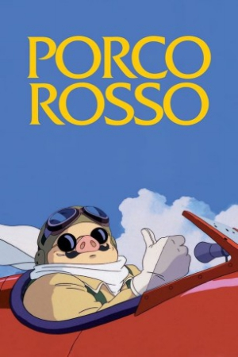

Also known as:紅の豚 (original title)
Country:Japan, 93 minutes
Spoken languages:Japanese
Genres:Family, Comedy, Animation, Adventure
Director(s):Hayao Miyazaki
Writer(s):Hayao Miyazaki
Video Codec:Unknown
Number: 2758


Certification:
Storyline:
In Italy in the 1930s, sky pirates in biplanes terrorize wealthy cruise ships as they sail the Adriatic Sea. The only pilot brave enough to stop the scourge is the mysterious Porco Rosso, a former World War I flying ace who was somehow turned into a pig during the war. As he prepares to battle the pirate crew's American ace, Porco Rosso enlists the help of spunky girl mechanic Fio Piccolo and his longtime friend Madame Gina.
Cast:
Medium: Original DVD,
Comments: Part of Studio Ghibli Special Edition Collection
Loaned: No
Aspect ratio: Unknown